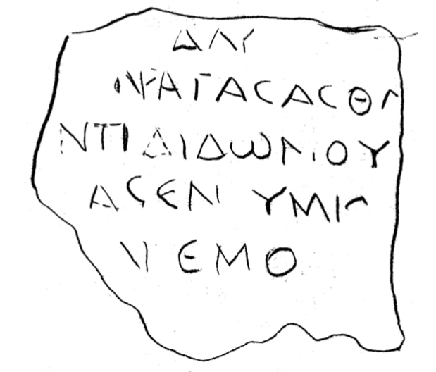

სოხუმის კირქვის ფილის ფრაგმენტი
შინაარსი / Summary
დეკრეტი
ბიბლიოგრაფია Bibliography
კრიტიკული გამოცემა Interpretive Edition
ΔΛ Υ
ἀγάσασθα ι
ἀντιδιδὸν οὖ δας
κατεσκεύασεν ὑμί ω ν
5...εμο...
დიპლომატიური გამოცემა Diplomatic Edition
ΔΛ Υ
ΑΓΑΣΑΣΘΑ Ι
ΑΝΤΙΔΙΔΟΝ ΟΥ ΔΑΣ
ΚΑΤΕΣΚΕΥΑΣΕΝ ΥΜΙ Ω Ν
5ΕΜΟ

Fragment of limestone plaque from Sukhumi, 1998
{'ka': '137 (წელს - აქ იქნებოდა თვე და რიცხვი) პატივისცემა (ან - თაყვანისცემა) ... სამაგიეროდ მიგებული მიწა (მიწის ნაკვეთი, ნიადაგი)... ააგო თქვენი...'}
{'default': 'წარწერაში გამოთქმულია პატივისცემა, აღტაცება იმ პირის მიმართ, რომელმაც სამაგიეროდ მიაგო (ვიღაცას) მიწის ნაკვეთი, რომელზედაც ააგო თქვენთვის (ტაძარი, \n ძეგლი - ან სხვა რამე). წარწერა თარიღიანია (137 წ.) და იგი თავისი შინაარსით სამაგიერო პატივის მიგებას ეხება (ე.ი. არის დეკრეტის რიგის). მართალია, წარწერა თარიღიანია, მაგრამ \n ყურადღებას იქცევს ის, რომ თარიღი თავშია და წელთაღრიცხვა ბოსფორისაა მოცემული. ბოსფორის წარწერებში თარიღი ძირითადად ბოლოშია, ისევე როგორც პონტოსპირეთის \n წარწერებში, მაგრამ თარიღი არის წარწერის შუაშიც და უფრო იშვიათად თავში. თავშია წარწერებში: პანტიკაპეიონიდან, №734 - წარწერა აკლდამის კედელზეა - 285 წ., \n ფანაგორიიდან, №1008 - - ტავროსკვითების პირველი მოხსენიებით - დაზინებულია თარიღის ბოლო ნაწილი, ივარაუდება II-III სს. ცუკურის ლიმანიდან №1112 - \n სამშენებლო წარწერა - 335 წ. სოხუმის წარწერის ასოთა მოხაზულობას ბევრი პარალელური მასალა მოეპოვება, მოტანიალია მხოლოდ მათი ნაწილი (თარიღიანი და მკვლევართა მიერ დათარიღებული წარწერები):\n ოლვიაში - II ს-ის წარწერა (ხელი უფრო დაუდევარია, მაგრამ იდეაში ასოების მოხაზულობა ისეთივეა). ხერსონესის წარწერებში: ყველა ასოს მოხაზულობა მსგავსია 245 წ.წარწერაში, \n მსგავსი, მაგრამ არა იდენტური ω არის 129 წ., 185 წ. და 383-95 წწ-ის წარწერებში. ხერსონესის 129-130 წლებით დათარიღებულ წარწერებში ყველა ასო სოხუმის წარწერის ასოების \n მსგავსია (ω არის იმავე ტიპის, ოდნავ განსხვავებული). პონტოს პირეთიდან შემდეგი მასალაა: წარწერა ფაძიმონიტისიდან - ასოების მოხაზულობა ჰგავს, მხოლოდ ხელი უფრო წმინდაა. \n გამომცემელი ვარაუდობს, რომ ის II ს-აა, იქიდანვე - ასოები სოხუმის წარწერის მსგავსია, თარიღი არ აქვს, მაგრამ კომენტარში იხსენიება ვესპასიანე, ე.ი. წარწერა I ს-ად არის\n მიჩნეული. ამისოდან ზოგადად რომაული ხანით დათარიღებულ წარწერაში სოხუმის წარწერის მოხაზულობის ასოებია. ნეოკლავდიოპოლისის თარიღიანი წარწერის (127-128 წწ.) ასოები \n მსგავსია. იქიდანვე - 125-126 წწ. თარიღიანი წარწერების ასოები მსგავსია. ასევე - ამასიიდან 172-173 წწ-ის და ევხაიტიდან 145-146 წწ. ასოების მოხაზულობა სოხუმის წარწერის ბევრი \n ასოს მოხაზულობის მსგავსია. გაზიურადან - ეპიტაფიას თარიღი არა აქვს, ხელი დაუდევარია, მაგრამ ასოების მოხაზულობა ჰგავს სოხუმისას. ათენიდან - პრიტანების სია 138-139 წწ. \n იქიდანვე - II ს., იქიდანვე - II-III ს., იქიდანვე - II . წარწერა, ოსტიიდან - სამშენებლო წარწერა - II-III სს. კრეტიდან - III ს., ოლიმპიიდან - 245-249 წწ., ფესტოსიდან - \n ზოგადად ელინისტური ხანით დათარიღებული, პიზიდან - II ს. (შეწირვითი), სმირნიდან - II ს., ლიკიიდან (ე.წ. დიოგენეს წარწერა, წვრილი ხელით გულმოდგინედ შესრულებული) - \n დათარიღებულია 200 წ., რომიდან - II ს. (საფლავის წარწერა, ძალზე ფაქიზად შესრულებული), აკვილეიდან - ბასილას სტელა - III ს., პოძუოლიდან (μ არის განსხვავებული) - \n I ს-ის მეორე ნახევრით დათარიღებული, პალერმოდან სტელა (ბილინგვა) - I ს., იერუსალიმიდან - I-II სს., სირას მუზეუმიდან - III ს. წარწერა გამოქვეყნებული აქვს ვ. ვეტროგრადოვას (ფოტოპირით, თავისი ასლით და კომენტარით). მოტანილია მის მიერ დადგენილი ტექსტი და თარგმანი, რაც თ. ყაუხჩიშვილის \n წაკითხვისაგან განსხვავდება:\n [τοῦ] δάμ[ου ψάφισμα]\n ](α)ν ἀγάσασθ(α)[ι]\n [ἀ]ντιδιδων ου[\n [κατεσκε]ύασεν ὑμί(ω)ν [τριήρεις]\n [ἄ]νεμο[ς]\n\n Перевод:\n [Постановление] народа\n ]выразить восхищение[ \n ]возмещающий[\n ]снарядил (ваши?) [триеры]\n ](ветер?)[\n\n წარწერა ავტორს გამოცხადებული აქვს II ს-ად (შესაბამისი მასალა სხვა წარწერებიდან მოყვანილი არ არის).'}
<div type="edition" xml:lang="ka" ana="mtavruli" xml:space="preserve">
<ab>
<lb n="1"/><w lemma="ქრისტე"><expan><abbr>ქ</abbr><ex>რისტ</ex><abbr>ე</abbr></expan></w>
<w lemma="განსუენება"><expan><abbr>გა</abbr><ex>ნ</ex><abbr>ო</abbr><ex>ჳ</ex><abbr>ს</abbr><ex>უ</ex><abbr>ენე</abbr></expan></w>
<w lemma="სულ">სოჳ<lb n="2" break="no"/>ლსა</w>
<name nymRef="ვაჩა">ვაჩაჲს<lb n="3" break="no"/>ასა</name>
<name nymRef="გურა"><expan><abbr>გო</abbr><ex>ჳ</ex><abbr>რაჲ<lb n="4" break="no"/>სასა</abbr></expan></name>
<name nymRef="მირა"><expan><abbr>მ</abbr><ex>ი</ex><abbr>რა</abbr><ex>ჲ</ex><abbr>ს</abbr><ex>ა</ex><abbr>ს</abbr><ex>ა</ex></expan></name>
</ab>
</div>